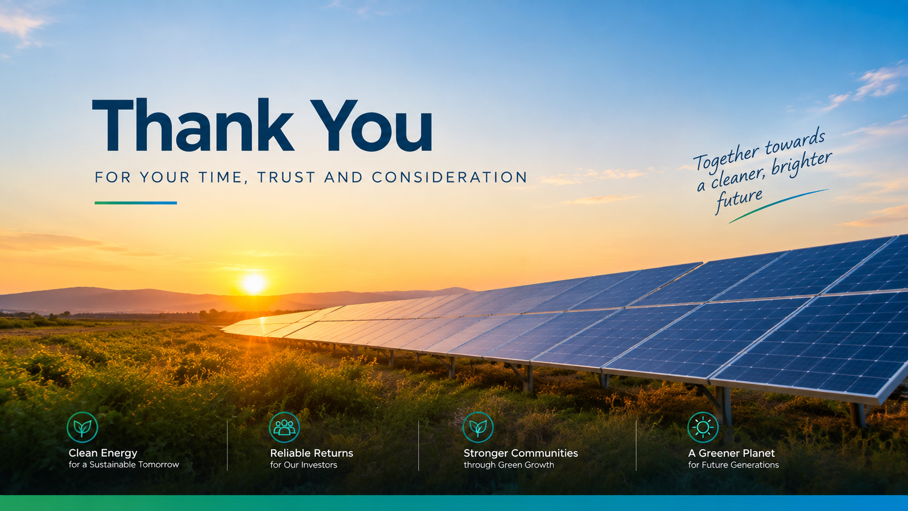

Captive consumption
Owner's own industrial business consumes the electricity directly.
A separate Gujarat solar project concept presented in the supplied private-review deck.
These are deck figures and assumptions, not an independent feasibility verification.
Rated grid-injection capacity stated in the deck.
Oversized DC array described to maximise generation hours.
Current-generation, higher-efficiency technology referenced in the deck.
Remote monitoring capability is specified in the technical profile.
Performance-guarantee based O&M model described in the deck.

Visual reproduced from the supplied private-review deck.
The supplied deck highlights solar resource, industrial demand, transmission infrastructure and an established renewable ecosystem.
High solar irradiation and clear-sky conditions are cited in the deck.
Gujarat's industrial consumer base is cited as a potential offtake pool.
Existing HT networks are cited as supporting grid evacuation.
Established EPC, O&M, finance and regulatory infrastructure is cited.
The deck says the commercial model determines effective revenue per unit and recommends evaluating net realised value after applicable charges.
Owner's own industrial business consumes the electricity directly.
Supply to eligible participating captive consumers holding equity in the project.
Supply through the state transmission grid, subject to applicable charges and regulations.
Contractual electricity sale with a creditworthy offtaker to support revenue certainty and bankability.
The deck's base case shows promoter equity, target debt and contingency, subject to appraisal and approvals.
Promoter contribution shown in the capital structure slide.
Target bank / NBFC project finance, subject to appraisal, sanction and security.
Buffer described for cost overruns, regulatory changes and EPC variations.

The deck models 8.5 million units/year at ₹3 per unit, then subtracts ₹0.15 Cr land rent, ₹0.45 Cr O&M + insurance + admin, and approximately ₹1.96 Cr debt service, leaving approximately ₹0 Cr during the loan period. It explicitly presents this as a conservative downside case rather than the target business case.
This page reproduces the supplied project deck; it does not independently validate the assumptions.
Clear title or long-term lease for 20–25 acres.
Utility approval for HT evacuation.
Creditworthy buyer at a viable rate.
Fixed-price, performance-guaranteed EPC.
Bank sanction at target terms.